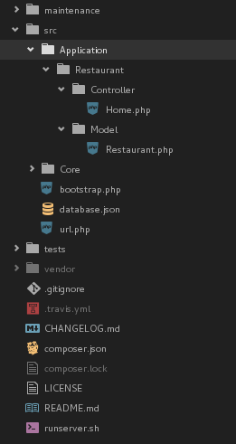

CRUD Example
Vamos mostrar como efetuar as principais operações de banco de dados, como insert, update, delete e select. Serão criados model's e controllers, com consultas semelhantes ao padrão active record, utilizando o ORM integrado do framework.
Application
A aplicação de exemplo terá o nome Restaurant, tendo um model Restaurant.php e um controller Home.php, abaixo a estrutura montada para este exemplo.

URL
O arquivo src/url.php terá o seguinte formato.
<?php
$url = [
'/^\/restaurant\/add\/?$/' => ['Restaurant/Home/restaurantAdd',['GET']],
'/^\/restaurant\/update\/?$/' => ['Restaurant/Home/restaurantUpdate',['GET']],
'/^\/restaurant\/delete\/?$/' => ['Restaurant/Home/restaurantDelete',['GET']],
'/^\/restaurant\/get\/?$/' => ['Restaurant/Home/restaurantGet',['GET']],
'/^\/restaurant\/select\/?$/' => ['Restaurant/Home/restaurantSelect',['GET']],
];
Model
Model Restaurant.php terá o seguinte formato.
<?php
namespace Application\Restaurant\Model {
use \Core\Model;
class Restaurant extends Model {
public $id;
public $place;
public $serves_hot_dogs;
public $serves_pizza;
protected function schema() {
return [
'id' => Model::primaryKey(),
'place' => Model::char(['length' => 80]),
'serves_hot_dogs' => Model::boolean(['null' => false]),
'serves_pizza' => Model::boolean(),];
}
protected function name() {
return "restaurant";
}
}
}
Controller
Controller Home.php terá o seguinte formato.
<?php
namespace Application\Restaurant\Controller {
use \Core\Controller;
use \Core\DAO\Transaction;
use \Core\Util;
use \Application\Restaurant\Model\Restaurant;
class Home extends Controller {
private $db_transaction;
public function __construct($request_method = null) {
parent::__construct($request_method);
$this->db_transaction = new Transaction();
}
public function restaurantAdd() {
//
}
public function restaurantUpdate() {
//
}
public function restaurantDelete() {
//
}
public function restaurantGet() {
//
}
public function restaurantSelect() {
//
}
}
}
Add record
O controller para adicionar registros tera o seguinte formato.
public function restaurantAdd() {
// load model with Transaction instance
$restaurant = new Restaurant($this->db_transaction);
// open connection
$this->db_transaction->connect();
// save
$restaurant->save([
'place' => 'place of test',
'serves_hot_dogs' => 1,
'serves_pizza' => 1,]);
Util::renderToJson($restaurant);
}
Update record
O controller para atualizar registros tera o seguinte formato.
public function restaurantUpdate() {
// load model with Transaction instance
$restaurant = new Restaurant($this->db_transaction);
// open connection
$this->db_transaction->connect();
// save
$restaurant->save([
'place' => 'place of test',
'serves_hot_dogs' => 1,
'serves_pizza' => 1,]);
// update
$restaurant->place = 'bla e bla';
$restaurant->serves_hot_dogs = 0;
$restaurant->save();
Util::renderToJson($restaurant);
}
Delete record
O controller para deletar registros tera o seguinte formato.
public function restaurantDelete() {
// load model with Transaction instance
$restaurant = new Restaurant($this->db_transaction);
// open connection
$this->db_transaction->connect();
// delete all register without filter
// $restaurant->delete();
// save
$restaurant->save([
'place' => 'place of test',
'serves_hot_dogs' => 1,
'serves_pizza' => 1,]);
// delete current instance
$restaurant->delete();
Util::renderToJson($restaurant);
}
Get record
O controller para pegar um registro especifico tera o seguinte formato.
public function restaurantGet() {
// load model with Transaction instance
$restaurant = new Restaurant($this->db_transaction);
// open connection
$this->db_transaction->connect();
// get(unique)
$restaurant->get([
'place' => 'place of test']);
// delete current instance
// $restaurant->delete();
// update
// $restaurant->place = 'bla e bla';
// $restaurant->serves_hot_dogs = 0;
// $restaurant->save();
Util::renderToJson($restaurant);
}
Select record
O controller para filtrar registros tera o seguinte formato.
public function restaurantSelect() {
// load model with Transaction instance
$restaurant = new Restaurant($this->db_transaction);
// open connection
$this->db_transaction->connect();
// select with where, order by, limit(pagination) and join left
// $restaurant_list = $restaurant
// ->where([
// 'restaurant.id' => [15,16],])
// ->orderBy([
// 'restaurant.serves_pizza' => 'desc'])
// ->limit(1,5)
// ->update([
// 'place' => 'testandiooo123654'])
// ->execute([
// 'join' => 'left']);
// select with update and return changes
$restaurant_list = $restaurant
->where([
'restaurant.serves_hot_dogs' => [1,0],]) // id in(1,2)
->orderBy([
'restaurant.serves_pizza' => 'desc'])
->limit(1,5) // page 1 limit 5
->update([
'place' => 'place update yea!']) // update in current select
->execute([
'join' => 'left']); // join left|right optional
// list of query's
// Util::renderToJson($restaurant->dumpQuery());
// render to json result
Util::renderToJson($restaurant_list);
}